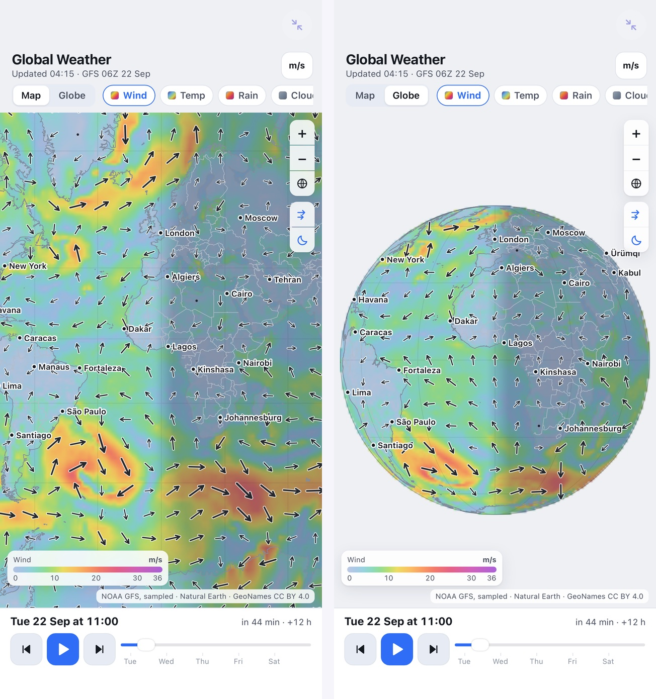
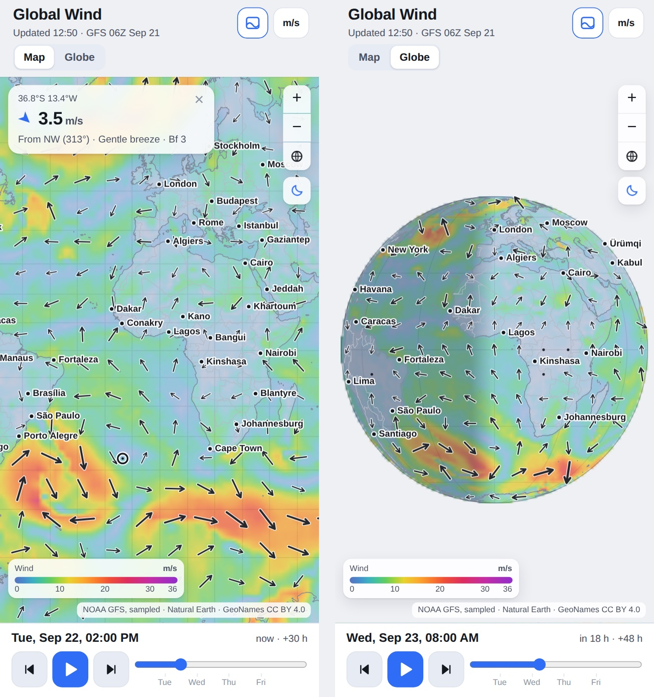
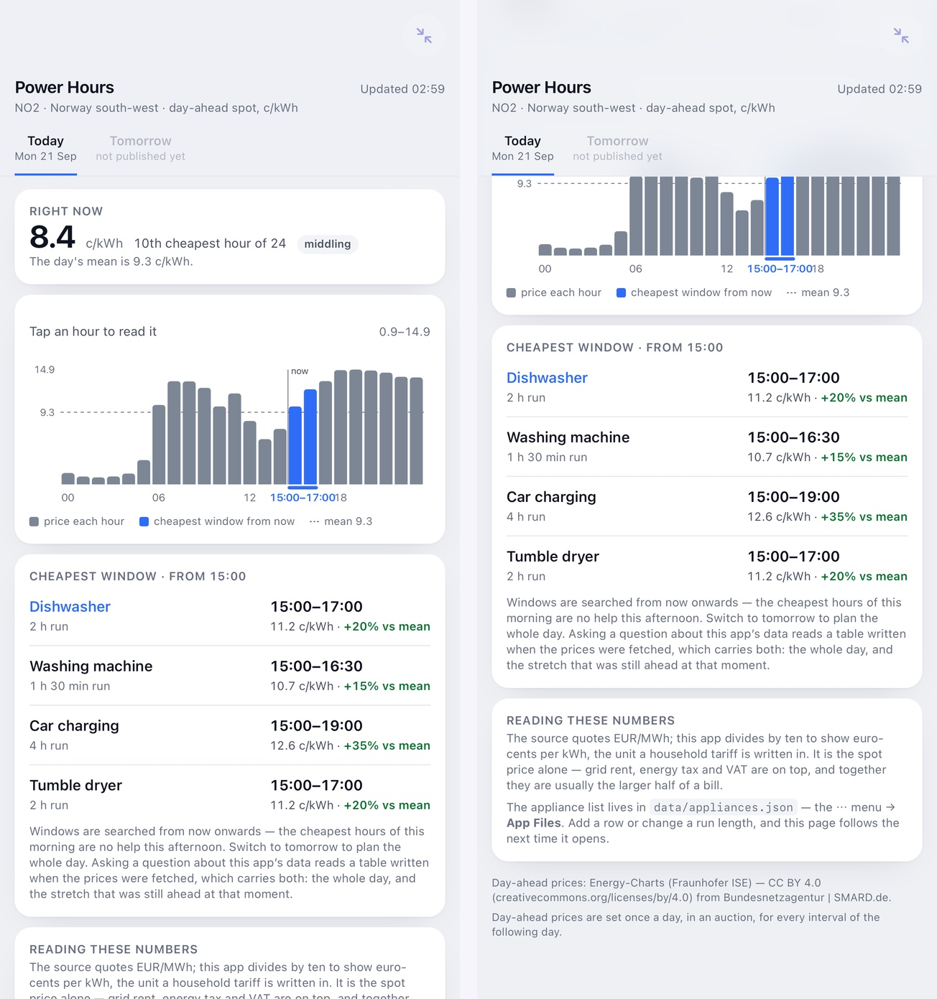
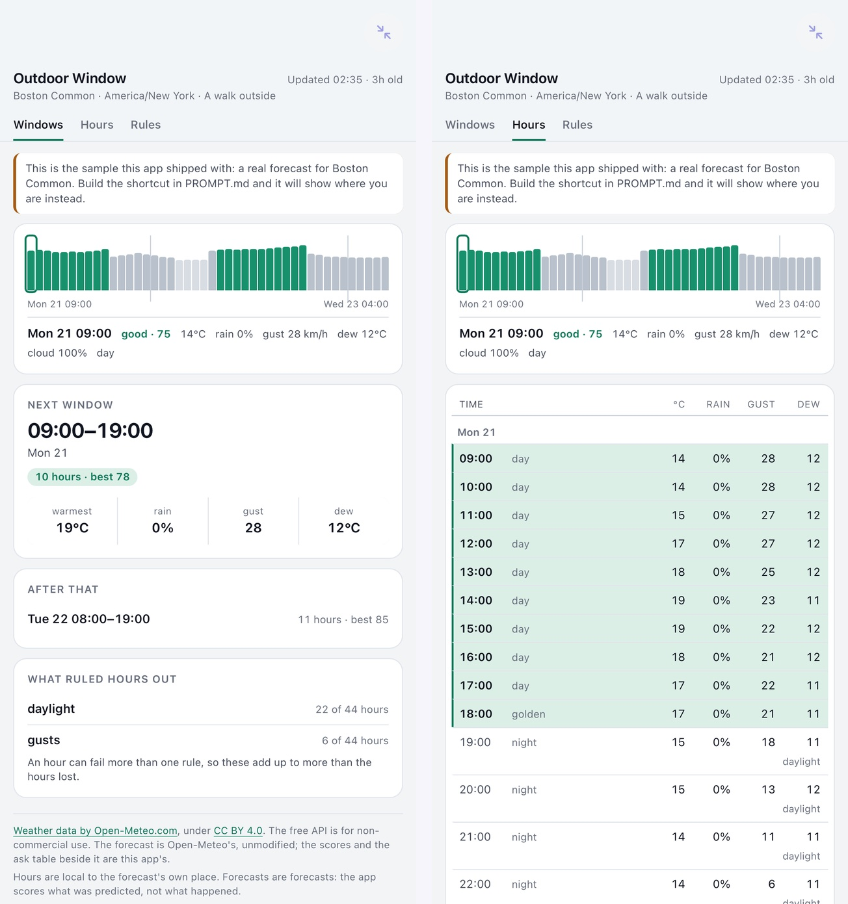
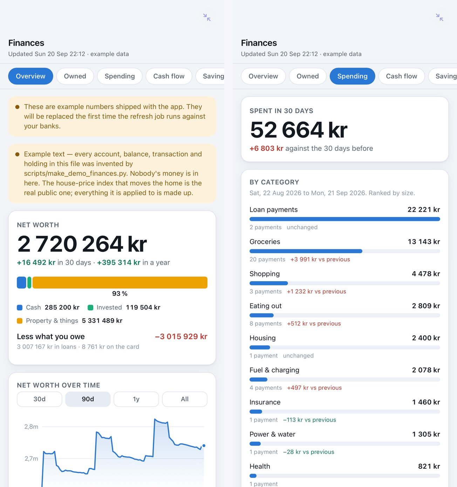

The example apps
Every one built by asking an AI. Every one runs offline in Snuggery — and in your browser.
These are the apps in the open template repository. Open in your browser runs the app itself, with the data it last published. Get the ZIP is the same app for your iPhone: open the link in Safari, tap Download, open the download and choose Share → Snuggery. Three taps, nothing to set up. Where there is a write-up on how one was made, it is linked.
The big ones — worth a look first
-
Besseggen
The ridge in 3D from Kartverket's 1 m terrain, the marked trail, real sun and shadows, a walking-time profile, viewsheds and named peaks. Not a navigation tool.
Open in your browser Get the ZIP How it was built
17 MB · needs nothing
-
Norne Reservoir
The open Norne oil-field model — 44,431 cells and 36 wells through nine years of production — with the platform, the templates and the pipelines above it, each drawn only as far as the public record goes.
Open in your browser Get the ZIP How it was built
15 MB · needs nothing
-
Milky Way
The Solar System, the Sun's neighbourhood and the galaxy in one continuous zoom, from JPL, Gaia and published catalogues only — no artist's impression anywhere.
Open in your browser Get the ZIP How it was built
6.5 MB · needs nothing
-
Anatomy
A full human body in 3D: 934 real anatomical models in layers you can peel, fade, isolate and pull apart.
Open in your browser Get the ZIP
21 MB · needs nothing
The live ones — apps whose data refreshes on a schedule
A GitHub Action fetches, a Shortcut on your phone copies the file in, the app redraws. Snuggery itself never goes online. How the loop works.
-
Running Dashboard
Weekly volume, training load, heart-rate zones, sleep and a coaching evaluation from a Garmin watch. The copy here shows made-up data until you connect your own.
Open in your browser Get the ZIP How it was built
1.1 MB · needs a Garmin sign-in
-

Global Weather
Five days of global wind, temperature, rain, cloud and pressure on a map and a 3D globe.
Open in your browser Get the ZIP
2.4 MB · needs nothing
-

Global Wind
Five days of global wind on a world map and a turnable globe, with a time player.
Open in your browser Get the ZIP
1.1 MB · needs nothing
-
World News
Today's headlines by region, from freely licensed newsrooms' feeds.
Open in your browser Get the ZIP
tiny · needs nothing
-

Power Hours
Tomorrow's electricity prices, and the cheapest hours to run each appliance.
Open in your browser Get the ZIP
tiny · needs nothing
-

Outdoor Window
Scores the next 48 hours of weather against rules you write yourself, and shows when to go out — for wherever you are, through a Shortcut of your own.
Open in your browser Get the ZIP
tiny · needs your own Shortcut
-

Finances
Net worth, accounts, spending and savings — bank data over PSD2, plus the house, cars and loans no bank report holds. Made-up numbers until you connect a bank.
Open in your browser Get the ZIP
tiny · needs a bank connection
-
Hello Live
A clock and three numbers rewritten about hourly by a GitHub Action. It proves your loop before you build anything real.
Open in your browser Get the ZIP
tiny · needs nothing
Make your own
Snuggery's Create tab writes the prompt: describe the app you want, and the prompt tells your AI the rules an app needs to follow to run in the sandbox — plain HTML, its data in files beside it, no network. Paste it into whatever AI you use, import the ZIP that comes back, and it runs. Nothing here generates anything; the app is yours to ask for. Back to Snuggery.